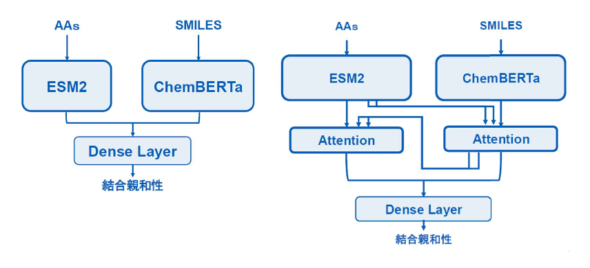
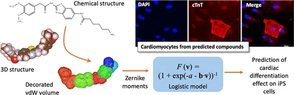
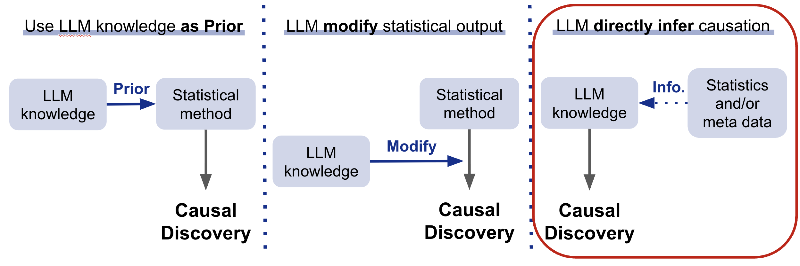

人工知能学会全国大会（JSAI2026）, 2026年6月 · 第一著者
Computational biology / Machine learning / Web development
京都大学大学院薬学研究科 修士課程在学中。
生命科学 x データサイエンスで創薬プロセスを革新したいです。
Profile
京都大学大学院薬学研究科 修士課程在学中。生体分子計測学分野に所属し、統計モデルを活用したLC/MSデータの解析手法の開発に取り組んでいます。
Publications

人工知能学会全国大会（JSAI2026）, 2026年6月 · 第一著者

Journal of Chemical Information and Modeling, 2024 · 共著

Preferred Networks Tech Blog, 2025 · 夏季インターン成果物
Selected Work
LC/MSで得られる複雑なシグナルデータを混合分布モデルとして扱い、 タンパク質・ペプチドの同定と定量を行う解析ツールを開発しています。 サンプルの階層性を活かしたMixture-of-mixturesモデルを提案し、最適輸送を目的関数とした最適化アルゴリズムを実装しました。
乳がんKEGG Pathwayに関連する19遺伝子を対象に、LLMで向き付きエッジをペアワイズ推定しDAGへ統合。 プロンプト設計の改善により、統計的手法と比較しながらF1=0.780まで性能を向上させました。
成果記事を読む造血幹細胞移植後の予後予測コンペに研究室チームで参加。 Kaplan-Meier変換、Pairwise損失関数、Seed averaging、LightGBMの調整を担当し、銀メダルを獲得しました。
Competition page京都大学iCeMSにてアルバイト研究員として参加。少数データから機械学習で分化誘導化合物を予測し、 薬学知識をもとにフラグメント分解・新規化合物生成・PDBファイル作成を担当。 実験によって実際に心筋細胞への分化誘導が確認され、査読付き国際誌に掲載されました。
論文を読むGoogle Apps Script、Google Calendar API、LINE APIを用いて、LC/MS/MS機器メンテナンスの担当日を前日に通知するBotを作成。 研究室メンバーの日常業務に継続利用されています。
Experience
2025.8 - 2025.10
タンパク質言語モデル・分子言語モデル・マルチモーダル基盤モデルを用いた創薬タスクを検証。 実用性の限界を分析し、新たなアーキテクチャによる精度改善に取り組みました。
2025.8 - 2025.9
LLMを用いた遺伝子ネットワーク抽出に取り組み、文献知識から因果関係を推定する手法を設計・評価しました。
2025.2 - 2025.3
蛍光スペクトルの2次元Tensorデータから蛍光ラベルを予測するモデルを構築。 データ構造を保つ前処理を提案し、実装しました。
2022.10 - 2025.3
医療画像セグメンテーション、健康診断データ分析、RAGチャットボット、SAMによる欠損検知、 OR-Toolsによる日程最適化、YOLOによる安全行動モニタリングなどに取り組みました。
2023.9 - 2024.3
OpenAI APIを用いたWebアプリ開発に参加。GoによるバックエンドAPI、Next.jsによるチャットUI、 マークダウン表示、ストリーミング応答などを実装しました。
Skills
薬学・生命科学のドメイン理解を土台に、統計モデル、機械学習、Webアプリケーションまで横断して実装します。
Python, TypeScript, Go, Git, Docker, Linux
PyTorch, Scikit-Learn, XGBoost, LightGBM, Transformers, YOLO, RAG
Computational drug discovery, Proteomics, LC/MS/MS, Molecular / Protein language models
React, Next.js, Gin, Ruby on Rails, OpenAI API